The National Energy Masterplan Implementation Committee
NEMiC is the central secretariat under the Energy Commission of Nigeria, charged with executing the National Energy Master Plan, 2023 to 2048. It was constituted in October 2024. This page sets out its mandate, the instruments it operates and its progress, as recorded in the committee's own strategic plan.
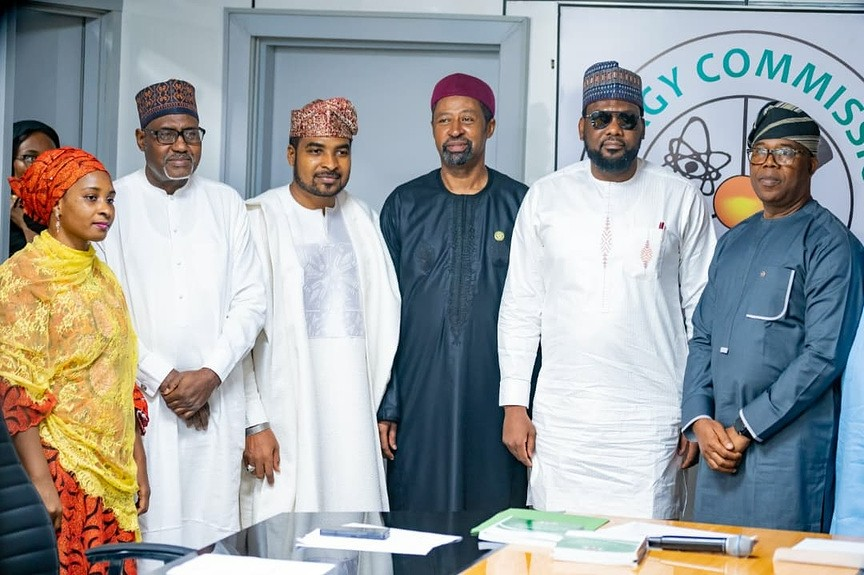
The plan in six figures.
The investment requirement, the fund target, the 2030 renewable target, the Afreximbank arrangement, the access gap, and the annual cost to the economy of unreliable power.
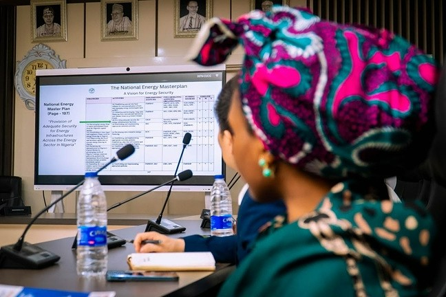
Nigeria's frameworks have failed at delivery, not at design.
The plan is blunt about this. National development frameworks in Nigeria have failed because of weak implementation mechanisms rather than weak policy. NEMiC was created to close that specific gap, not as another policy writing body but as the coordinating body the plan calls the Energy Ecosystem Architect, connecting federal agencies, state governments, private investors and development finance institutions around one accountable delivery system.
The structural gaps it was created against are set out below.
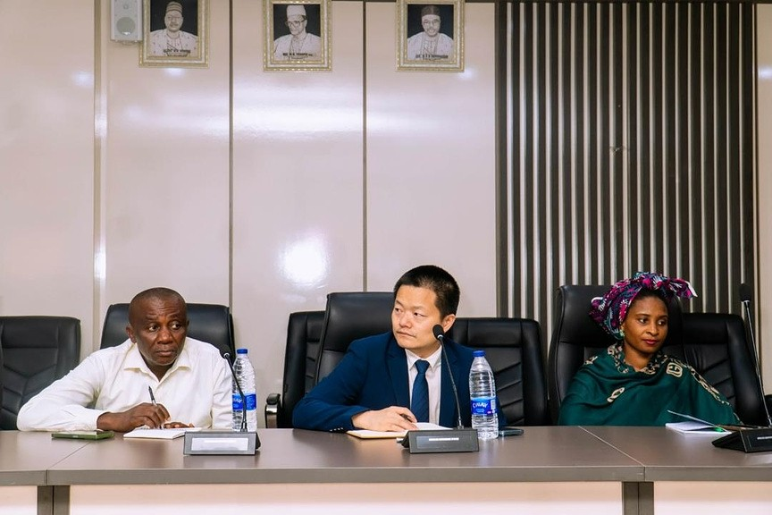
13,000 MW installed, under 5,000 MW available
Effective available capacity rarely exceeds five thousand megawatts, because of gas supply disruptions, credit instability and unexecuted fuel supply contracts, against demand already above thirty thousand megawatts and projected to pass one hundred thousand by 2040.
One grid, under half its technical capacity
The single national grid runs below fifty per cent of technical capacity, on outdated infrastructure, with frequent system collapses and no radial redundancy.
Losses of 40 to 50 per cent
Aggregate technical, commercial and collection losses average forty to fifty per cent across the distribution companies. The plan records this as severe commercial non viability.
Under 500 MW deployed against 427 GW of potential
Theoretical solar potential exceeds four hundred and twenty seven gigawatts. Deployed grid tied renewable capacity sits under five hundred megawatts, barely one per cent of the resource.
25 per cent of GDP against a 75 per cent benchmark
Nigeria's infrastructure stock is roughly a quarter of gross domestic product, against a benchmark closer to three quarters for economies at a comparable stage.
Budget allocations that cannot reach US$100 billion
Federal allocations are insufficient against the requirement, domestic capital is expensive and short tenor, project preparation is weak, and a country risk premium deters long term foreign direct investment.
Who delivers what.
NEMiC sits under the Energy Commission of Nigeria as the plan's secretariat. It does not replace a regulator and it does not supersede a ministry. Its leverage is the link between reporting and money: quarterly capital releases to ministries, departments and agencies are tied to their reported progress against shared targets.
-
01
National Steering Committee
Strategic direction, policy alignment and the resolution of implementation bottlenecks.
Headed by the President Special Adviser on Energy as chair representative -
02
NEMiC, the plan secretariat
Coordination, prioritisation, pipeline governance, investment facilitation and implementation oversight, through the Plan Implementation Unit inside the Energy Commission.
Plan Implementation Unit Monitoring and evaluation NEIIA and the NEDB -
03
Delivery layer
Sector policy, project sponsorship and programme implementation, federal and subnational.
SEPI units in the states Plan Implementation Units in MDAs DEPPA Project sponsors and SPVs
The dated record.
Every row below is a dated act of government or a signed instrument recorded in the strategic plan, except the last, which is where the platform stands today.
The Federal Executive Council approves the National Energy Policy and the National Energy Master Plan, establishing Nigeria's long term energy transition framework.
The West African ECOWAS Energy Information System launches, the regional data bridge linking the West African Power Pool, the ECOWAS Regional Electricity Regulatory Authority and the ECOWAS Centre for Renewable Energy and Energy Efficiency. Integrating the National Energy Data Bank with it becomes a key data governance milestone.
President Bola Ahmed Tinubu formally unveils the National Energy Master Plan, signalling national commitment to implementation.
NEMiC is constituted, to move the master plan from policy to execution.
Tripartite agreement signed with the Nigeria Governors' Forum, the Energy Commission and the Nigeria China Renewable Energy Research Centre, the technical collaboration that later supports the SEPI units.
The National Energy Fund is inaugurated and operationalised to unlock sustainable financing for priority energy projects, alongside the inauguration of the committee itself.
Five milestones in the first operating quarter: the Afreximbank memorandum of understanding is executed, the NEFUND general partner and limited partner architecture is defined and regulatory consultations open with the Securities and Exchange Commission, SEPI pilot units launch in Lagos, Kogi, Kwara and Kano, MDA coordination protocols are established, and design of the NEIIA platform begins.
The 25-year strategic plan and first progress report are issued under reference NEMiC/SPR/2026/01. Every figure on this page is read against that document.
The NEIIA platform and the module briefs behind it are built and in final review, awaiting launch. This row is the platform's own status and is not in the March 2026 report.
The six instruments.
The master plan sets the intent. These are the vehicles that carry it, each with its own legal basis, its own owner and its own state of readiness.
NEMP · National Energy Master Plan
The plan itself, running 2023 to 2048, approved by the Federal Executive Council in April 2022 and publicly unveiled in May 2024. It carries a total investment requirement of US$100 billion (one hundred billion United States dollars).
NEFUND · National Energy Fund
The capital aggregation vehicle, an umbrella platform under a general partner and limited partner framework compliant with Securities and Exchange Commission regulation. Proposed total size US$100 billion, with a first phase target of US$10 billion (ten billion United States dollars) scaling to US$50 billion. Read the NEFUND page.
NEIIA · the data and intelligence layer
The common information layer for the whole pipeline, covering demand and resource data, asset mapping, project readiness, risk and ESG information, and monitoring and evaluation. Nine products sit on it. See the nine modules.
SEPI · State Energy Planning and Implementation
The subnational entry point. A SEPI unit gives a state its own energy plan and its own project pipeline, and it is the only door into the national pipeline. Piloted in four states, with ten more planned for the second quarter of 2026 and all thirty six targeted by 2027.
SHINE · Sustainable Housing and Infrastructure for New Energy
The flagship delivery programme for universal access, financing solar home systems through banks, solar firms and insurers against a revolving NEFUND facility, repaid pay as you go.
NEDB and NEDF · the data bank
Statutory custodian of Nigeria’s official energy statistics under the Energy Commission Act, with a National Energy Data Fund to be established through voluntary contributions from international development partners. Open the data bank.
How the plan reaches the states.
Electricity distribution, land allocation for generation assets and last mile delivery all depend on state cooperation, so the plan puts a planning and implementation unit inside the state government itself. SEPI identifies, validates, prioritises and prepares state level opportunities, then submits qualified projects into the national deal room. As at March 2026 four units are operational, supported by technical collaboration with the Nigeria China Renewable Energy Research Centre.
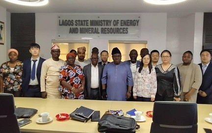
Operational, with a ten megawatt generation project pipeline recorded as an early milestone.
Operational, with localised off grid mapping recorded as an early milestone.
Operational as one of the four pilot units.
Operational as one of the four pilot units.
What happens next
The Energy Commission has announced expansion to ten additional states in the second quarter of 2026, with full coverage across all thirty six states targeted by 2027. The plan itself names this as one of the clearest tests of whether the coordination architecture scales beyond a handful of relatively well resourced early states.
Four actors, one revolving fund.
SHINE is the delivery vehicle for the commitment that no individual, village or community is left without power. It avoids bureaucratic distribution delays by running through four institutions that already exist, each doing the thing it is already good at, against a central fund that refills as subscribers repay.
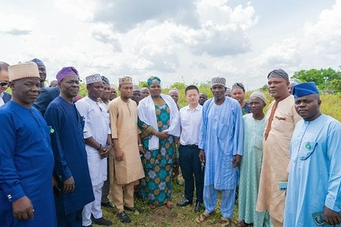
Manages the central revolving fund and channels public and multilateral seed capital into it.
Onboard subscribers through the banking portal, run customer profiling and affordability checks, and originate the solar loan.
Certified solar firms receive a verified deployment mandate from the bank, then install and maintain the hardware.
Underwrite the physical asset and guarantee long term system performance, so a failed installation is not the subscriber's loss.
From the progress report.
Photographs published in the committee's own progress report, reproduced here with the captions the report gives them.
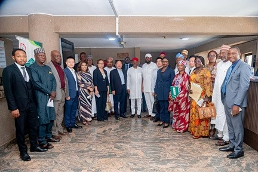
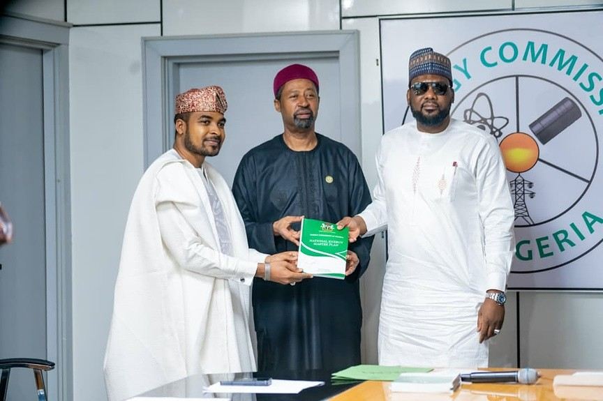
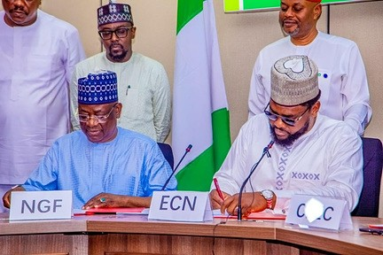
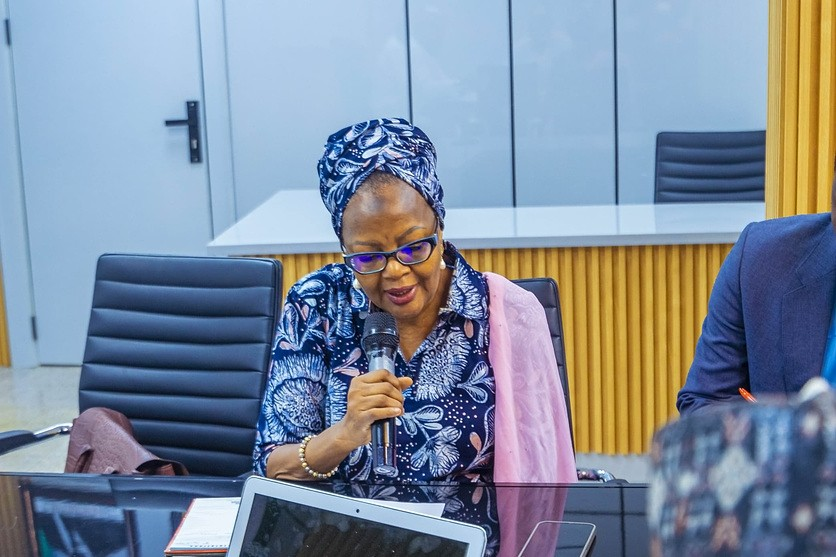
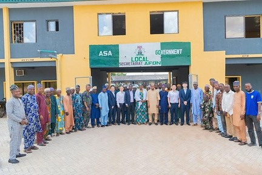
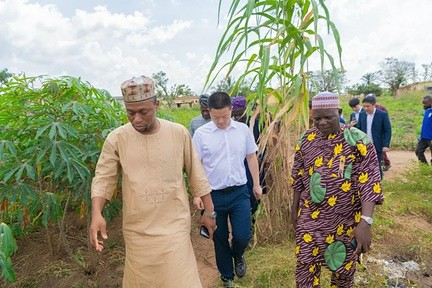
Work with the Administration.

The National Energy Master Plan, 2023 to 2048.
Coordinated by NEMiC under the Energy Commission of Nigeria, and reported against a single set of dates and measures through to 2048.
NEMiC · Energy Commission of Nigeria · All 36 states and the Federal Capital Territory